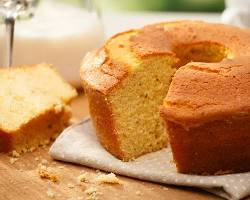

Como fazer bolo de fubá com erva doce?

Se você gosta de um bolo de fubá fofinho e saboroso, vai amar essa receita, super prática, rápida e que fica uma delícia para tomar com aquele cafezinho no café da tarde!
Se interessou? Então confira os ingredientes:
- 3 ovos
- 1 a 2 xícaras de açúcar
- 2 colheres de sopa de margarina
- 2 copos americanos de leite
- 2 xícaras de fubá
- 1 xícara de farinha de trigo
- Erva doce a gosto
- Uma colher de chá de fermento para bolo
Modo de preparo:
- Bata os ovos, a margarina e o açúcar primeiro, pode ser em um liquidificador, batedeira ou a mão, o que preferir
- Em seguida, acrescente uma xícara de fubá e um copo de leite, deixe batendo e vá acrescentando o restante do fubá e do leite aos poucos
- Se necessário, acrescente mais fubá, caso não, pode acrescentar a farinha de trigo até sentir que deu o ponto
- Com o liquidificador ou a batedeira desligados, acrescente a erva doce, e bata por apenas 1 minuto, apenas para a erva doce integrar no bolo
- Por fim, acrescente a colher de chá de fermento para bolo, se sentir que ele não vá crescer, pode adicionar mais um pouco, novamente, não bata por muito tempo, apenas o necessário para ele integrar à receita
- Unte uma forma do tamanho de sua preferência com óleo ou manteiga e farinha de trigo ou fubá e despeje toda a massa do bolo
- Leve para assar em forno pré-aquecido por aproximadamente 30 a 40 minutos ou até fazer o teste do palito e ele sair seco
Viu! Não é tão difícil preparar esse bolo maravilhoso.
É necessário apenas tomar cuidado com o tempo que a erva-doce e o fermento são batidos, pois pode acontecer do bolo ficar amargo devido à substância que a erva doce solta ao ser triturada, ou do fermento perder suas propriedades
então siga as recomendações da receita e seu bolo será fofinho!
Início